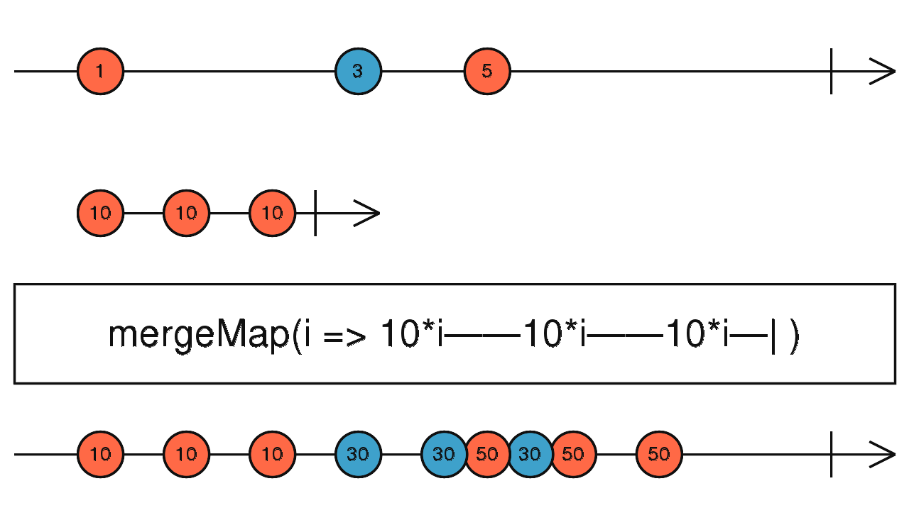

mergeMap
参数列表：
-
project
function(value: T, ?index: number): ObservableInput
map的函数，传入原始Source的Value,返回一个新的Observable
-
resultSelector
function(outerValue: T, innerValue: I, outerIndex: number, innerIndex: number): any
(可选)一个函数，用于决定最终扁平化之后的值。传入的4个值分别为:source的值，project返回的Observable的值，以及2个对应的index
-
concurrent
number
(可选)merge可以同时订阅的source数量，默认是正无穷大。
返回值: Observable
珠宝图:

功能说明:
- mergeMap 先对每个Source的value做map，然后对map的结果(Observable)做mergeAll
备注事项:
- 可以通过concurrent设置mergeMap的并发度
点击不同按钮查看不同demo 代码效果